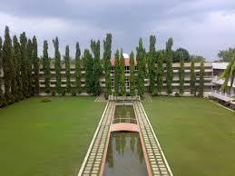

I am graduated from MGM's College of Engineering Nanded .
With cgpa of 8.91

Mahatma Mission, that started its journey in a modest way with a rural health care center at Nila and a hospital in Nanded: has emerged as a 5000- member family with more than 50 educational organizations,
health care centers and social welfare units functioning under its umbrella at 5 centers i.e. Aurangabad, Nanded, Navi Mumbai, Noida and Parbhani.
Spanning a period of 35 years, MGM establishments prove the deep faith of her management in the power of education that leads the society towards Prosperity of the nation.
I did my Higher Secondary Education from Blue Bells Junior College.

Blue Bells Junior College in Nanded, Maharashtra, India, is a co-educational institution located at Gauri Complex, Nanded Ho, Nanded - 431601.
I completed my schooling from Little Scholars' Public School.
Situated in Nanded.
LITTLE SCHOLARS PUB. P.S. was established in 2003 and it is managed by the Pvt. Unaided.
It is located in Urban area.
It is located in NANDED M.C. block of NANDED district of Maharashtra.
The school consists of Grades from 1 to 10.
The school is Co-educational and it have an attached pre-primary section.
The school is N/A in nature and is not using school building as a shift-school.
English is the medium of instructions in this school.
This school is approachable by all weather road.
In this school academic session starts in April.